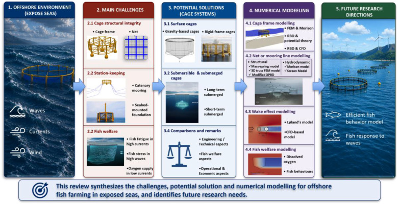

Offshore fish farming in exposed seas: A state-of-the-art review of challenges, potential solutions and numerical modelling

Abstract
Global warming has accelerated the shift from nearshore to offshore aquaculture, where colder waters, improved water exchange, lower pen density, and reduced inter-pen infection risks provide more favourable conditions for sustainable fish production. However, offshore fish farming faces major challenges from high waves and strong currents. This state-of-the-art review addresses key issues associated with these challenges, including cage structural integrity, station-keeping, and fish welfare. Potential solutions for offshore operations, such as surface and submerged or submersible cage systems, are summarized and compared. Furthermore, this review presents recent advances in numerical modelling for offshore fish farming, including the determination of environmental conditions, wave modelling, cage frame modelling, net system and mooring line modelling, wake effect modelling, fish welfare modelling and physical tests for model calibration and validation. By identifying critical risks in practices, highlighting emerging engineering solutions, and presenting the comprehensive overview on the numerical modelling approaches, this study provides valuable guidance for promoting the sustainable development of offshore fish farming.
Read the published article ↗